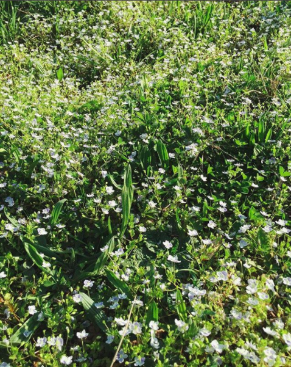
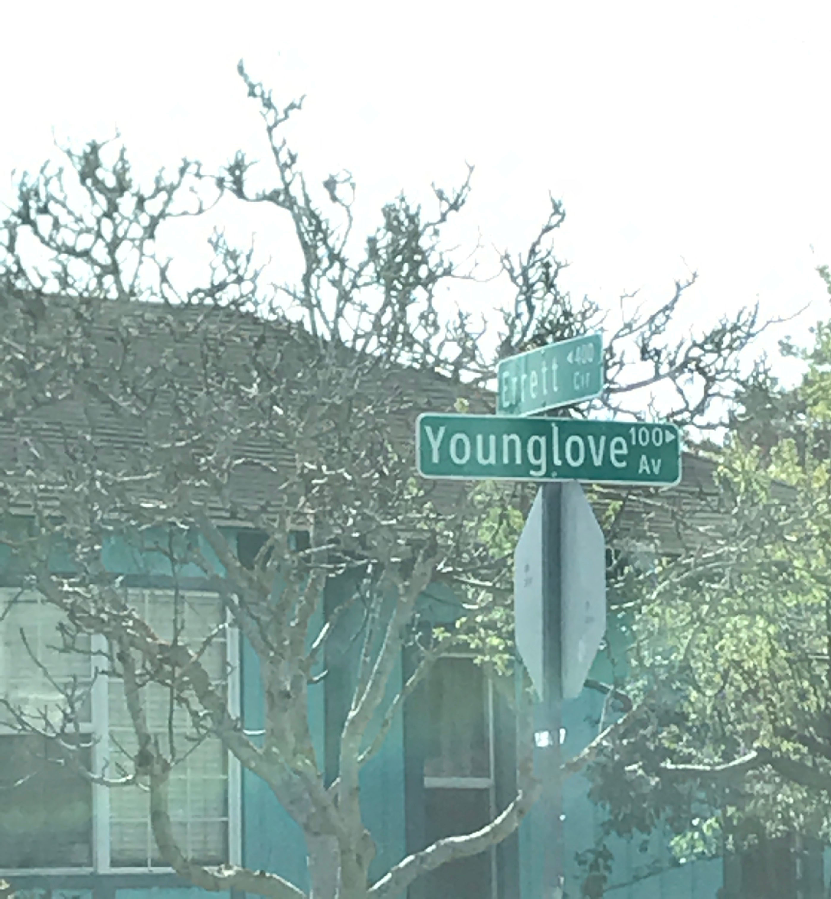
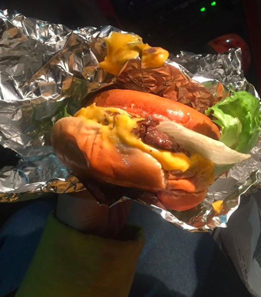
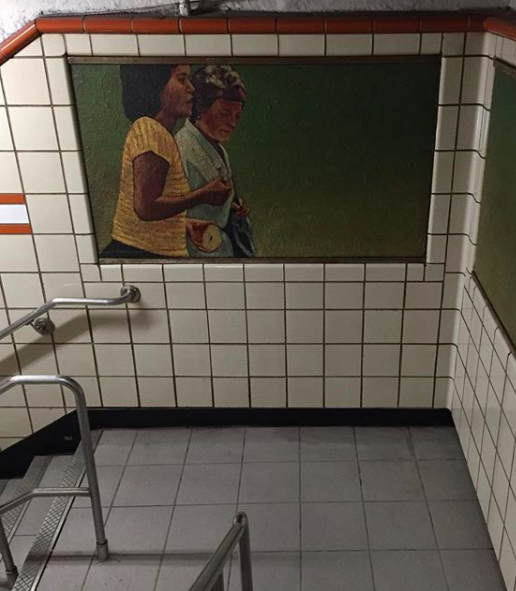
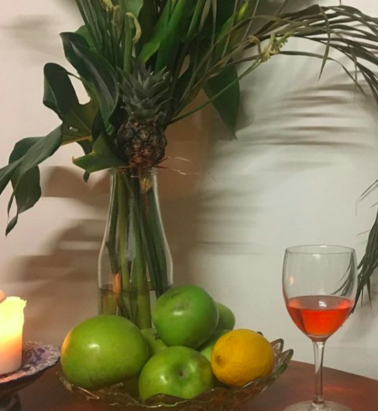
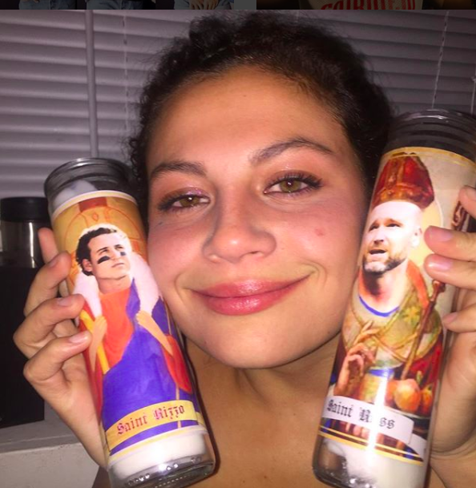
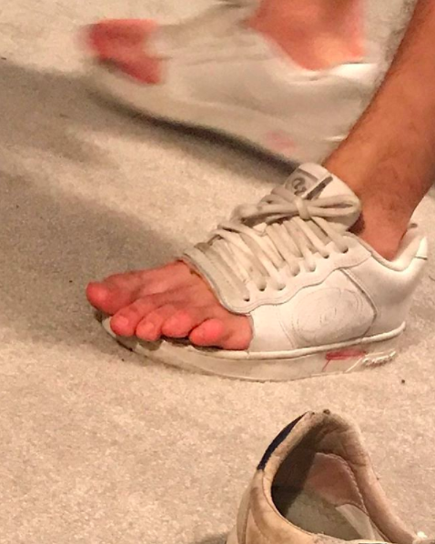
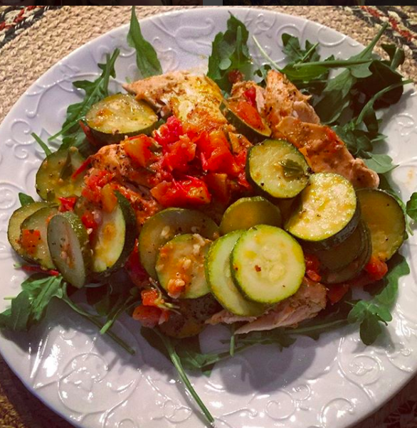
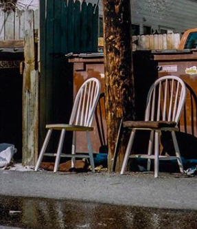
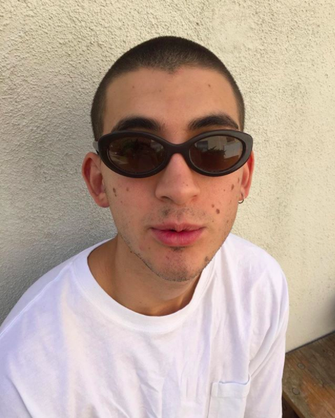

I didn't know if Olivia would be home. I put my key into the lock and flung open the door. Her head turned and in a few seconds she locked me in a hug and stroked my hair. We stood intertwined; my snot got all over her orange sweater. She patted my greasy hair and got me tissues.

Mark texts me daily. Mostly he sends me pictures of cats, but often he asks "how my soul is." Whenever I describe him to others I call him my mentor. I called him today when I sat outside of a nice coffee shop in Bushwick. We laughed about the band Korn. We talked about the "mp3 generation," and what can be gained by listening to albums from beginning to end.

When Paige and I were 13 we watched beauty guru videos and made a fake tumblr to freak out our friend Monica. Paige goes to CU and we talk once a week about our lives and the Law of Attraction. She is healing from her childhood, and I am too.

Moments after my dad got off the phone with his doctor, I called Tay to tell her the news. I often call Tay crying, (she picks up the phone to my red face and smushed eyes,) and in those instances her face moves from joy to concern very quickly. Tay does a good job of convincing me that happiness and good fortune will triumph, even when I know that life is more complicated than hard work and optimism.
Nolan and I used to smoke a lot of weed in his Nissan Xterra. We would go to NCAR and look out over Boulder. We listened to bad music ironically. He sends me YouTube videos of weird shit and I do the same.

When I was 18 we were out on The Hill and Emma Boelt's drank so much of the rum my brother bought us that she fell out of my Honda Accord and started puking on the patch of grass between the sidewalk and the road. Another time I found Emma puking in Justin White's back yard while Kipp Planchard, who was also almost puking, wiped her face with paper towels.

One time Izzy told me that she thought I'd be good at babysitting because "I"m really good at making adults happy" so it would be easy for me to deal with little kids. It's the most memorable compliment I've ever received.

Ethan Cohen makes me laugh!!!
Diana texts me to tell me she loves me even when she's across the world from me!

Monica Gronseth and I exchanged letters and CD mixes we made for each other while I lived in Kansas during middle school. The content of these letters mostly fixated on boys. I remember one CD she sent me had both the BeeGees and Nickelback on it. Monica and I do not talk anymore, with the exception of birthday texts that we make sure to send each other every year.

I've only known Katie since she roomed with my good friend Aimee during first semester of freshman year at CU. She's very generous and loving. She sends me postcards of the photos she takes in the mail. Soon she will move to New York.

Charlie and I had "TAG" together in third grade. I remember one day during our Latin unit, we talked about The Beatles. In an attempt to challenge the status quo, I said that The Beatles "were dumb." Charlie and I did choir together throughout all of eighth grade and most of high school. We would go to thrift stores during the school week and he would talk to me about fashion. I've been contacting people through facebook in order to find him an apartment to sublet in New York City this summer.